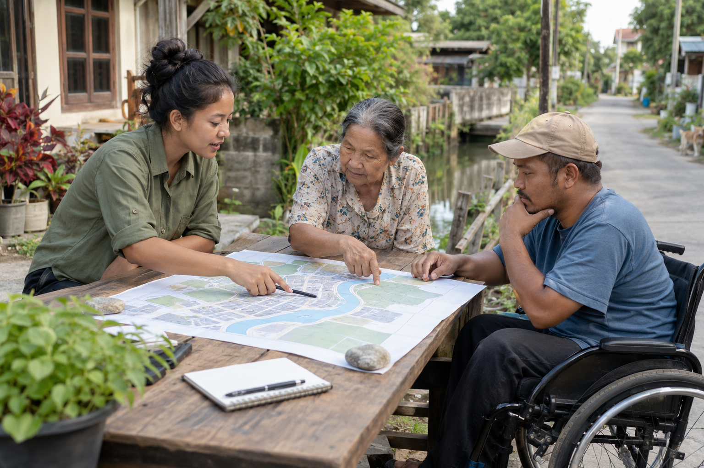

Many voices.
One shared
language.
A field guide to the identities, foundations and patterns that connect UNDRR’s digital experiences.
Family resemblance.
Room for character.
A property changes the brand layer. The structure, language and familiar interaction patterns stay connected.
What we share
Typography roles, spacing, responsive grids and component contracts. The Mangrove base sits beneath the UNDRR layer and each property theme.
What can change
Brand colours and semantic treatments such as actions, tags and heroes. Choose a property throughout this guide to see those decisions in context.
Applications
One prevention message, adapted for sharing, reading and learning.

AI-generated concept
Begin with
local knowledge
Bring people’s experience into the conversation before choosing an intervention.
Listen
Ask what matters most to the community.
Map
Connect that experience with the evidence.
Act
Agree a practical next step together.
What can local
experience reveal?
What matters to the people who live here?
Where do experience and evidence meet?
What practical step comes next?
Sources and ownership
Property names are text labels. The UNDRR signature carries institutional ownership. These are illustrative communications using the selected colour layer.
The application sequence and varied formats are inspired by DELTA’s link card, report spread, web composition and training slide. Its editorial review also identifies too much conference imagery and too little field work. This scene brings the purpose of disaster risk reduction into the foreground.
Public references from DELTA’s source inventory: Early-warning report cover, restrained UNDRR event signage. Internal captures and exploratory DELTA artwork are not embedded.
Give colour a job.
Select a swatch to see its actual CSS value and usage. These colours are read from the active theme, built from Mangrove’s YAML sources.
Primary action
Preview uses the selected background with the theme’s button text colour. The ratio checks WCAG AA for normal text; it is one part of an accessibility review.
A role for every voice.
Prose needs room to read. Interface labels need room to scan. Font roles carry that intent across languages.
Building resilience together
Better decisions begin with shared knowledge. Put the key message first, then give people the detail they need to act.
Knowledge / Action / Resiliencetext · heading
Roboto for Latin prose and headings. Noto Sans Arabic for Arabic body text; Noto Kufi Arabic for headings.
display · ui
Roboto Condensed for Latin hero titles and scanned chrome. Arabic display uses Noto Kufi Arabic; chrome uses Noto Sans Arabic.
code
The code role keeps technical examples distinct. Use role properties in styles so language overrides remain connected.
The system in use.
The same component language can support a knowledge listing, an editorial page or an action. Change the property and compare.
Illustrative content with real Mangrove button, tag and card classes. The compact specimen header is a teaching aid. Production pages use the canonical PageHeader and Footer.
See complete production page recipes ↗Make the message
human.
Knowledgeable. Approachable. Collaborative. The visual system works best when the words and images share those qualities.
The shared map explains the task. The neighbourhood gives context. A protected text area keeps the message readable; a visible credit area identifies the image as a concept.
AI-generated fictional scene / Mangrove explorationHelp communities understand risk and take action.
Lead with the reader’s need. Prefer concrete verbs, concise sentences and positive framing of prevention and recovery.
The operationalisation of disaster risk reduction capacity development mechanisms.
Build the skills to reduce disaster risk.
Illustrative copy, using the existing brand and editorial guidance.
Photography
Focus on people, prevention and recovery. Keep conference imagery to a minimum. Include the photo credit and source.
Identity
Use approved artwork. Keep a clear area equal to the width of the “U” around the UNDRR logo; use the inverse artwork on dark surfaces.
Ownership
Keep the UN identity and Sendai Framework visible. Use the canonical header and footer to carry the shared identity.
Keep the meaning
all the way through.
Choose a theme, name a semantic role, then use a documented component. The design decision should survive the journey to code.
-
Source
tokens/*.yamlBase + brand layers
-
Translate
Token generatorCSS + token dictionary
-
Design
Figma bridgeVariables and collections
-
Apply
CSS / React / DrupalShared component contracts
Choose your route
Carry the contract with you
CSS colour tokens can be channel triplets or complete colour expressions. The token reference below shows the correct syntax for each format.
React imports use the published component subpath. CSS-only tags remain plain markup. A component’s own style hooks are documented separately from theme tokens.
React integration ↗AI and MCP integration ↗
The Figma bridge is part of this feature branch. This prototype reads the YAML sources; it does not write to Figma or change any token.
Find the decision.
Search the generated theme tokens. Select a row to copy a declaration with the correct colour wrapping.
| Token / copy declaration | CSS value | Format |
|---|
Theme tokens only. Typography roles, data visualisation palettes, Sendai ramps and component style hooks also exist outside this dictionary. See their dedicated documentation.
Download the generated token dictionary ↓
One decision.
Many applications.
Use this guide to discuss a direction. Use the component documentation to build it.
For designers ↗
Brand identity, approved artwork and component treatments.
For editors ↗
Voice, imagery, attribution and ownership.
For developers ↗
Integration, page recipes and the component catalogue.
Print includes every chapter in the currently selected property. Expanded token search results can run over several pages.
About this exploration
Inspired by the DELTA Resilience brand book’s guided reading and application examples. Mangrove’s existing documentation and token sources remain authoritative. This is an exploratory interface, with illustrative content and no new brand approvals.